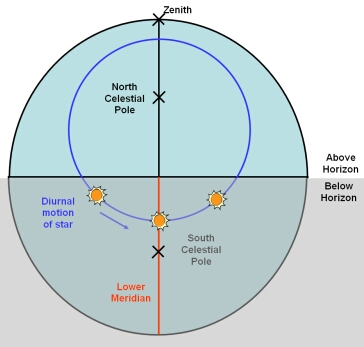
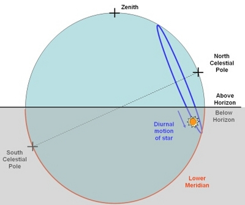

A meridian is an imaginary great circle on the celestial sphere that passes through the north and south celestial poles and an observer’s zenith. The Lower Meridian is the semi-circular segment of the meridian that is below the observer’s horizon. On the opposite side of the celestial sphere from the lower meridian is the upper meridian.
A Lower Meridian transit occurs when a celestial object moves across the lower meridian. Local midnight is the time when the Sun undergoes a Lower Meridian transit.
|

The lower meridian passing through the north and south celestial poles, and the observer’s zenith. This view is looking from the east towards the west for an observer in the Northern Hemisphere. The upper meridian is that part of the great circle above the horizon.
|

The same situation as in the diagram to the left, but viewed from the east looking towards the west for an observer in the Northern Hemisphere.
|